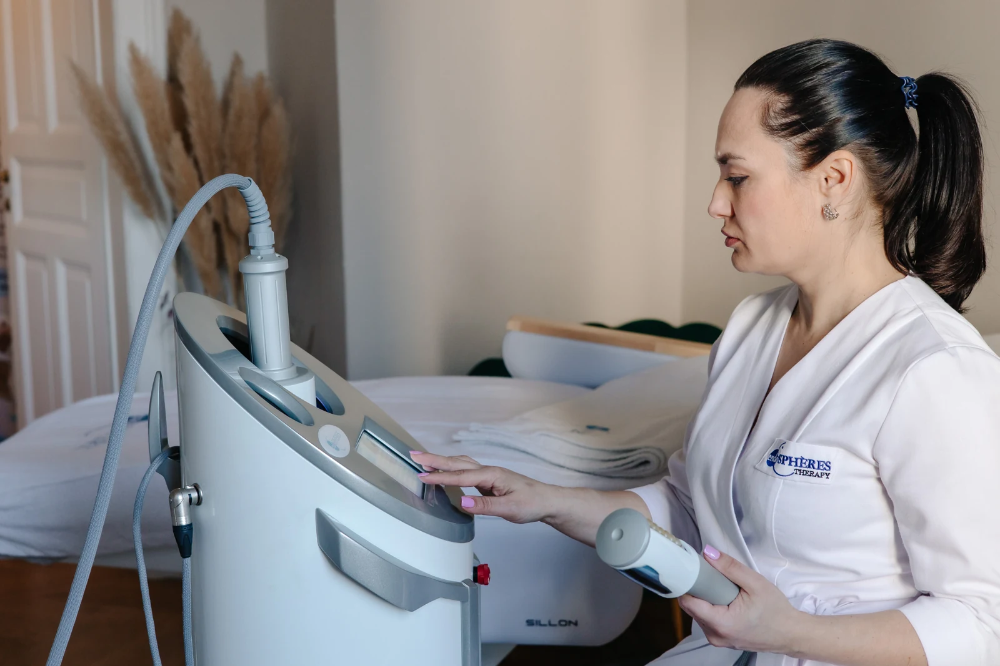
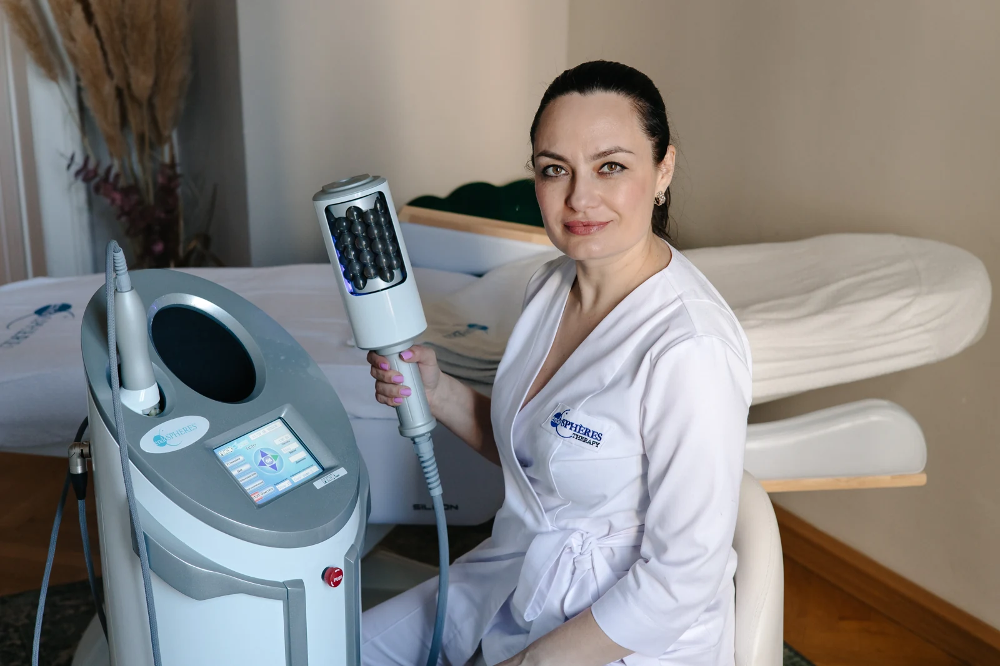

Endospheres ist eine nicht-invasive apparative Behandlung für Körper und Gesicht. Sie basiert auf der kompressiven Mikrovibration, einer patentierten italienischen Methode zur gezielten mechanischen Stimulation des Gewebes.
So funktioniert die kompressive Mikrovibration
Ein Handstück mit rotierendem Zylinder und 55 hypoallergenen Silikonkugeln überträgt rhythmische, pulsierende Impulse auf das Gewebe. Kompression und Mikrovibration werden mit einer auf den jeweiligen Bereich abgestimmten Anwendungsdauer kombiniert.
Die Intensität lässt sich individuell anpassen. Bei empfindlicher Haut oder sichtbaren Äderchen klären wir vorab, ob und in welcher Form die Behandlung für Sie geeignet ist.
Im Mittelpunkt unserer Arbeit steht die Endospheres-Therapie: eine patentierte italienische Methode, die die Wirksamkeit einer apparativen, nicht-invasiven Behandlung mit dem Komfort einer manuellen Massage verbindet.

Das Endospheres-Gerät im Studio

Das Handstück mit rotierenden Silikonkugeln
AM KÖRPER
Endospheres für den Körper
Die rhythmische Stimulation spricht Haut, Faszien und Muskulatur an. Im Mittelpunkt stehen das Hautbild, die Körperkonturen und das persönliche Körpergefühl — etwa bei Cellulite, Flüssigkeitseinlagerungen oder muskulären Verspannungen.
Ziele eines Behandlungskurses
Körperkonturen und Körperumfang gezielt in den Blick nehmen
Das Erscheinungsbild von Cellulite und unebener Haut verbessern
Den Lymphfluss und die Mikrozirkulation unterstützen
Ein festeres und elastischeres Hautgefühl fördern
Muskulatur entspannen und Verspannungen lösen
Ein leichteres, entspanntes Körpergefühl unterstützen
Mehr zur Anwendung
Druck, Drehrichtung, Drehgeschwindigkeit und Anwendungsdauer werden auf die behandelte Zone und Ihren individuellen Bedarf abgestimmt.
Die Behandlung orientiert sich an einem vom wissenschaftlichen Gremium des Herstellers entwickelten Protokoll. Je nach Handstück und Behandlungsplan können unterschiedliche Körperbereiche behandelt werden — von den Füßen über Beine, Bauch, Gesäß und Arme bis zu Rücken und Nacken.
IM GESICHT
Endospheres für das Gesicht
Die Gesichtsbehandlung arbeitet mit sanfter kompressiver Mikrovibration, ohne Nadeln und ohne invasiven Eingriff. Die rhythmischen Impulse stimulieren das Gewebe und können die Mikrozirkulation sowie den Lymphfluss unterstützen.
Ziele eines Behandlungskurses
Ein frischerer und gleichmäßiger wirkender Teint
Ein strafferes Hautgefühl und definierter wirkende Konturen
Weniger ausgeprägt wirkende feine Linien und Falten
Ein entspannteres Gefühl in der Gesichtsmuskulatur
Mehr zur Anwendung
Nach Angaben des Herstellers zielt die Methode außerdem auf die Unterstützung der körpereigenen Kollagen- und Elastinbildung sowie auf die Stimulation der Gesichtsmuskulatur ab.
Ob eine Wiederholung oder eine Kombination mit anderen kosmetischen oder medizinischen Anwendungen sinnvoll ist, stimmen wir individuell ab. Bereits erfolgte Behandlungen berücksichtigen wir bei der Planung.
Ergebnisse und Empfinden sind individuell. Umfang, Häufigkeit und Eignung der Behandlung besprechen wir im persönlichen Beratungsgespräch.
HINTERGRUND ZUR METHODEForschung & Studien
Die Fenix Group ist ein italienisches Unternehmen und Inhaberin der Marke Endospheres sowie der patentierten Methode der kompressiven Mikrovibration. Forschung und Entwicklung bilden einen Schwerpunkt ihrer Arbeit.
Nach Angaben des Herstellers wurde die Technologie in Zusammenarbeit mit Fachleuten aus Physiotherapie, Phlebologie und ästhetischer Medizin untersucht. Die Anwendungsprotokolle werden auf Grundlage von Studien und praktischen Untersuchungen entwickelt.
Mit ihrer Erfahrung in der Entwicklung apparativer Behandlungstechnologien hat sich die Fenix Group international etabliert. Endospheres wird in Beauty-Studios, ästhetischen Kliniken sowie Wellness- und Spa-Einrichtungen eingesetzt.
Wissenschaftliche Zusammenarbeit
Auf seiner Forschungsseite nennt der Hersteller unter anderem:
Università degli Studi „G. d’Annunzio“Chieti–Pescara, Italien
Willkommen bei Endo-SPA — Ihrem Studio für Endospheres-Massage, in dem moderne Technologie für Ihre individuellen Behandlungsziele zum Einsatz kommt.
Unsere Masseure werden regelmäßig geschult und zertifiziert, und unsere Geräte werden laufend gewartet — so können Sie sich bei jeder Behandlung auf Sicherheit und Qualität verlassen.
Zertifizierte Fachkräfte mit über 5 Jahren Erfahrung
Hochflexible Terminvereinbarung
Individueller Ansatz und persönlicher Behandlungsplan
Angenehme Atmosphäre in gemütlichem Ambiente
Ihr Weg zu einem besseren Körpergefühl
Ablauf einer Endospheres-Behandlung
01
Erstgespräch und Vorbereitung
Vor Beginn der Behandlung führen wir ein ausführliches Erstgespräch, in dem wir Ihre individuellen Wünsche und Ziele besprechen. Mit einer gründlichen Anamnese prüfen wir mögliche Kontraindikationen und stimmen die Behandlung bestmöglich auf Sie ab. Es wird empfohlen, vor und nach der Behandlung reichlich Wasser zu trinken.
02
Die Behandlung
Während der Behandlung liegen Sie entspannt auf der Liege. Das Endospheres-Handstück gleitet sanft über den Körper, und Sie spüren eine angenehme Vibration. Eine Sitzung dauert in der Regel etwa 30 bis 60 Minuten.
03
Nach der Behandlung
Im Anschluss erhalten Sie Pflegeempfehlungen, und Sie können in der Regel direkt in Ihren Alltag zurückkehren. Wie sich Hautgefühl und Gewebe entwickeln, ist individuell verschieden. Je nach Ausgangslage und Ziel kann eine Serie von Anwendungen sinnvoll sein. Den Rhythmus stimmen wir gemeinsam mit Ihnen ab.
EINBLICK IN DIE BEHANDLUNG
Die Technologie in Anwendung
Sehen Sie, wie die Endospheres-Behandlung im Studio abläuft. Die Intensität und die behandelten Bereiche werden persönlich mit Ihnen abgestimmt.
EINBLICKE IN BEHANDLUNGSVERLÄUFE
Vorher & nachher
Dokumentierte Beispiele aus unserem Studio. Ergebnisse sind individuell und nicht auf jede Person übertragbar.
Ausgewählte Auszüge aus öffentlich sichtbaren Google-Rezensionen. Individuelle Erfahrungen. Bewertungsstand: 14.10.2026.
PREISE
Ihre Behandlung. Ihr passendes Paket.
Wählen Sie zwischen Endospheres und Endospheres Evolution. Beide Preislisten bieten Unterkörper-, Ganzkörper- und Gesichtsbehandlungen.
Unterkörper
Bauch, Beine, Po
75 €45 Minuten · Einzelbehandlung
Behandlungspakete
6 Behandlungen
405 €
12 Behandlungen
765 €
Ganzkörper
Ganzkörperbehandlung
85 €60 Minuten · Einzelbehandlung
Behandlungspakete
6 Behandlungen
460 €
12 Behandlungen
870 €
Gesicht
Gesichtsbehandlung
55 €30 Minuten · Einzelbehandlung
Behandlungspakete
6 Behandlungen
300 €
12 Behandlungen
560 €
Unterkörper
Bauch, Beine, Po
85 €45 Minuten · Einzelbehandlung
Behandlungspakete
6 Behandlungen
460 €
12 Behandlungen
870 €
Ganzkörper
Ganzkörperbehandlung
99 €60 Minuten · Einzelbehandlung
Behandlungspakete
6 Behandlungen
535 €
12 Behandlungen
1.010 €
Gesicht
Gesichtsbehandlung
70 €30 Minuten · Einzelbehandlung
Behandlungspakete
6 Behandlungen
380 €
10 Behandlungen
595 €
Welches Angebot passt zu mir?
Die Dauer richtet sich nach der gewählten Behandlung: Unterkörper 45 Minuten, Ganzkörper 60 Minuten, Gesicht 30 Minuten. Welches Gerät und welcher Umfang zu Ihnen passen, besprechen wir persönlich.
Bitte informieren Sie uns vor Ihrem Termin über bestehende Erkrankungen und eine Schwangerschaft. Bei medizinischen Fragen ist vorab Rücksprache mit Ihrer Ärztin oder Ihrem Arzt erforderlich.
Schwangerschaft
Krebserkrankungen, die sich nicht in Remission befinden
Akute Entzündungen und Hautverletzungen
Thrombosen und akute Venenerkrankungen, einschließlich akut entzündeter Krampfadern
Akute Herz-Kreislauf-Erkrankungen
HÄUFIGE FRAGEN
Ihre Fragen zur Endospheres-Behandlung
Die wichtigsten Antworten für Ihren ersten Besuch. Weitere Fragen finden Sie nach Themen geordnet.
Tut die Endospheres-Behandlung weh?
Die Behandlung wird häufig als intensive Massage empfunden. Die Intensität stimmen wir auf Ihr persönliches Empfinden ab. Bitte sagen Sie sofort Bescheid, wenn etwas schmerzt oder unangenehm ist, damit wir die Behandlung anpassen oder unterbrechen können.
Wann sind die ersten Ergebnisse sichtbar?
Wann Sie Veränderungen wahrnehmen, hängt von Ihrer Ausgangslage, Ihren Zielen und der individuellen Reaktion ab. Wir besprechen realistische Erwartungen und betrachten den Verlauf gemeinsam. Eine bestimmte Wirkung nach einer festen Anzahl von Sitzungen können wir nicht garantieren.
Wie oft sollte ich zur Behandlung kommen?
Die Häufigkeit und die Abstände legen wir nach dem Erstgespräch fest. Dabei berücksichtigen wir die behandelten Zonen, Ihre Verträglichkeit und Ihren Alltag. Ein starrer Rhythmus passt nicht zu jeder Person.
Wie viele Behandlungen umfasst ein Kurs?
Die Anzahl richtet sich nach Ihren Wünschen, Ihrer Ausgangslage und der Verträglichkeit. Unsere aktuellen Pakete finden Sie im Preisbereich. Wir wählen den Umfang gemeinsam und beurteilen den Verlauf, statt eine feste Zahl für alle vorzugeben.
Gibt es Einschränkungen nach der Behandlung?
In der Regel können Sie anschließend in Ihren Alltag zurückkehren. Sie erhalten passende Hinweise zur Pflege und zum Verhalten nach der Behandlung. Informieren Sie uns, wenn Beschwerden auftreten.
Ist die Behandlung während Schwangerschaft oder Stillzeit möglich?
Schwangerschaft ist in unserem Studio als Kontraindikation aufgeführt. Während der Stillzeit und nach einer Geburt oder einem Kaiserschnitt ist vor einer Terminplanung eine individuelle ärztliche Abklärung erforderlich.
Können Nebenwirkungen auftreten?
Vorübergehende Hautreaktionen oder ein unangenehmes Empfinden sind möglich; eine vollständig nebenwirkungsfreie Behandlung können wir nicht versprechen. Teilen Sie uns Beschwerden mit. Bei anhaltenden, starken oder ungewöhnlichen Reaktionen lassen Sie diese ärztlich abklären.
Wie wird der Behandlungsverlauf dokumentiert?
Je nach Ziel können wir Ihr Hautgefühl, persönliche Rückmeldungen und gegebenenfalls Körperumfänge dokumentieren. Fotos erfolgen nur mit Ihrer Zustimmung. Endospheres ist kein Ersatz für eine medizinische Gewichtsbehandlung und garantiert keine Gewichtsabnahme.
Weitere Fragen nach Thema
Kurs & Alltag6 Fragen
Kann ich die Behandlung nach dem Sport wahrnehmen?
Bitte teilen Sie uns mit, wie intensiv Sie trainiert haben und ob Sie Beschwerden oder Verletzungen haben. Wir stimmen Zeitpunkt, behandelte Bereiche und Intensität individuell mit Ihnen ab.
Wie lange kann ein verbessertes Hautbild anhalten?
Das ist individuell unterschiedlich. Ausgangslage, Lebensstil und weitere Veränderungen des Körpers können den Verlauf beeinflussen. Eine feste Wirkungsdauer oder dauerhafte Anti-Cellulite-Wirkung lässt sich nicht zusagen.
Kann Endospheres bei Dehnungsstreifen helfen?
Dehnungsstreifen lassen sich mit einer kosmetischen Massage nicht zuverlässig entfernen. Ob eine Behandlung zur Pflege Ihres Hautbildes infrage kommt und welche Erwartungen realistisch sind, besprechen wir persönlich.
Wie wird eine Auffrischung oder ein Erhaltungskurs geplant?
Nach einer Serie besprechen wir, ob weitere Termine sinnvoll sind. Häufigkeit und Abstände stimmen wir individuell ab. Eine automatische oder unbegrenzte Fortsetzung ist nicht vorgesehen.
Ist eine Behandlung während der Menstruation möglich?
Sprechen Sie uns vorab an, wenn Sie Schmerzen, starke Blutungen oder sonstige Beschwerden haben. Wir richten die Terminplanung nach Ihrem Wohlbefinden und der individuellen Eignung aus.
Sind mehrere Tage Pause zwischen den Terminen möglich?
Ja, wir können die Termine mit passenden Pausen planen. Wenn nach einer Behandlung Schmerzen oder andere Beschwerden auftreten, informieren Sie uns bitte vor der nächsten Sitzung; bei anhaltenden oder stärkeren Beschwerden ist eine ärztliche Abklärung sinnvoll.
Gesicht & Kombinationen6 Fragen
Kann ich die Gesichtsbehandlung mit einer Biorevitalisierung kombinieren?
Bitte stimmen Sie die Kombination und den zeitlichen Abstand mit der behandelnden Ärztin oder dem behandelnden Arzt ab. Informieren Sie uns über geplante oder bereits erfolgte Injektionen. Eine direkte Kombination empfehlen wir nicht pauschal.
Lässt sich Endospheres mit Laser-Haarentfernung kombinieren?
Informieren Sie beide Behandelnden über die geplanten Anwendungen. Der geeignete Abstand hängt unter anderem vom Hautzustand, der behandelten Zone und dem Laserprotokoll ab. Gereizte oder verletzte Haut wird nicht behandelt.
Welche Kontraindikationen gelten für das Gesicht?
Bei aktiven Entzündungen, offenen Hautstellen, Herpes oder akut entzündlichen Hauterkrankungen wird die betroffene Zone nicht behandelt. Bitte nennen Sie uns bestehende Hauterkrankungen und kürzlich erfolgte kosmetische oder medizinische Eingriffe vor Ihrem Termin.
Was muss ich bei Fillern beachten?
Bitte nennen Sie uns das verwendete Produkt, die behandelten Bereiche und den Zeitpunkt der Injektion. Die Eignung und notwendige Wartezeit müssen mit der injizierenden Ärztin oder dem injizierenden Arzt abgestimmt werden. Eine unveränderte Wirkung oder Lage der Filler können wir nicht zusichern.
Wie viele Gesichtsbehandlungen werden empfohlen?
Umfang und Abstände richten sich nach Ihrem Hautzustand, Ihren Zielen und bereits erfolgten Anwendungen. Wir erstellen einen persönlichen Plan und prüfen die Verträglichkeit im Verlauf.
Kann das Gesicht bei Akne behandelt werden?
Bei akut entzündlicher Akne oder verletzter Haut wird die betroffene Zone nicht behandelt. Ob und wann eine Behandlung bei einem ruhigeren Hautzustand möglich ist, klären wir individuell und bei Bedarf dermatologisch ab.
Eignung & Methodenvergleich6 Fragen
Ist die Behandlung bei ausgeprägten Venen oder Krampfadern möglich?
Bei Krampfadern, auffälligen Gefäßen oder ungeklärten Schwellungen ist vorab eine ärztliche Abklärung erforderlich. Thrombosen und akute Venenerkrankungen gehören zu den Kontraindikationen. Eine kosmetische Behandlung ersetzt keine phlebologische Untersuchung oder Therapie.
Warum wird kein spezieller Massageanzug verwendet?
Bei Endospheres wird das Handstück direkt auf der dafür vorbereiteten Haut angewendet. Welche Vorbereitung und Pflegeprodukte für Ihre Behandlung vorgesehen sind, erklären wir Ihnen vorab.
Was unterscheidet Endospheres von RSL-Anwendungen?
Die Bezeichnungen stehen für unterschiedliche Geräte und Behandlungskonzepte. Wir erläutern Ihnen gern das bei uns verwendete Endospheres-Gerät und seine Methode. Pauschale Aussagen über die Echtheit, Sicherheit oder Wirkung anderer Marken lassen sich daraus nicht ableiten.
Was unterscheidet Endospheres von LPG?
Endospheres arbeitet mit kompressiver Mikrovibration durch rotierende Kugeln. LPG-Anwendungen beruhen auf einem anderen mechanischen Behandlungsprinzip mit Rollen und Unterdruck. Welche Methode geeignet ist, hängt von Ihren Zielen und Ihrer individuellen Situation ab.
Woran erkenne ich ein Originalgerät?
Fragen Sie nach der genauen Modellbezeichnung, den Geräteunterlagen und den Schulungsnachweisen. Ergänzende Informationen finden Sie beim Hersteller Endospheres. Kugelfarbe, ein Logo oder ein bestimmter Behandlungspreis allein sind kein verlässlicher Echtheitsnachweis.
Ist eine frühere Krebserkrankung eine Kontraindikation?
Bitte holen Sie vor einer Terminplanung eine Einschätzung Ihrer behandelnden Ärztin oder Ihres behandelnden Arztes ein. Auch bei Remission sind Art und Verlauf der Erkrankung sowie laufende oder frühere Therapien relevant.
Noch unsicher, ob die Behandlung zu Ihnen passt?
Schlechte Erfahrungen mit schmerzhaften Massagen und blauen Flecken
Schon vieles probiert, nur kurzfristige Ergebnisse
Unsicherheit, ob apparative Behandlungen wirklich wirken
Ob eine Endospheres-Behandlung die richtige Wahl für Sie ist, klären wir gemeinsam im persönlichen Beratungsgespräch.